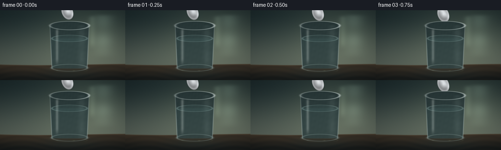
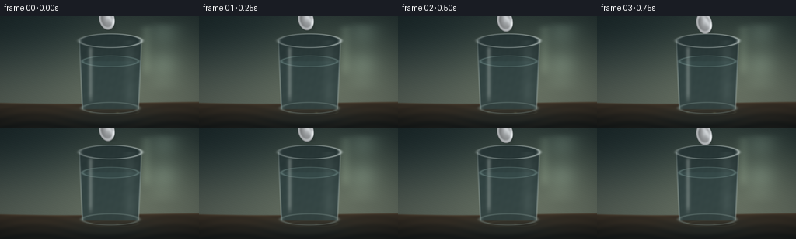
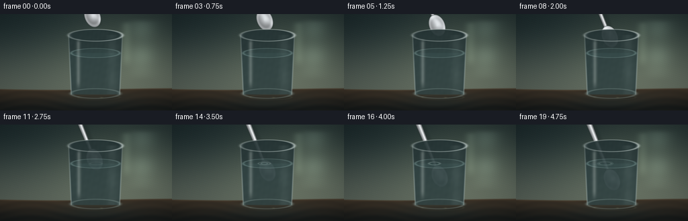
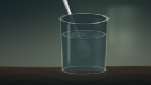
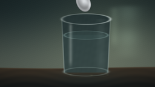
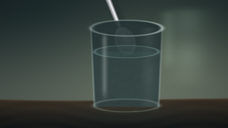
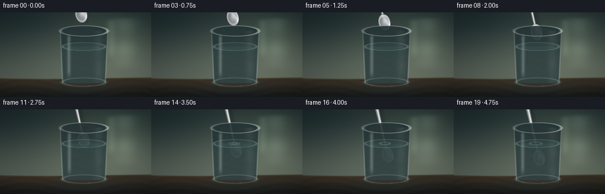
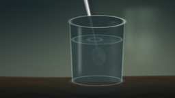
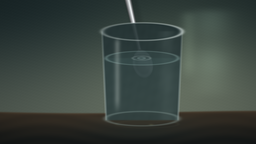
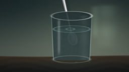

CODING AGENTS AS PIXEL WORLD MODELS
traex/DeepSeek-V4.1-Flash · phygen_072
点击播放 · 原生 RGB 像素
逐轮保存的候选
回放视频、检查图与代码变化。
每份候选均可单独播放。实际图片检查记录在下方工具轨迹中。
候选 01播放与检查图
点击播放 · 原生 RGB 像素


展开代码变化
--- 上一保存版本
+++ 本次保存版本
@@ -0,0 +1,316 @@
+from pathlib import Path
+
+import cv2
+import numpy as np
+from PIL import Image
+
+import artifact_io
+
+
+ROOT = Path(__file__).resolve().parent
+W, H, N, FPS = 256, 144, 20, 4.0
+SS = 4
+RW, RH = W * SS, H * SS
+
+
+def smoothstep(edge0, edge1, x):
+ t = np.clip((x - edge0) / (edge1 - edge0), 0.0, 1.0)
+ return t * t * (3.0 - 2.0 * t)
+
+
+def gaussian(x, sigma):
+ return np.exp(-0.5 * (x / sigma) ** 2)
+
+
+def mix(a, b, t):
+ return a + (b - a) * t[..., None]
+
+
+def overlay(rgb, color, alpha):
+ color = np.asarray(color, dtype=np.float32)
+ alpha = np.clip(alpha, 0.0, 1.0)[..., None]
+ return rgb * (1.0 - alpha) + color * alpha
+
+
+def draw_backdrop(x, y, t):
+ yn = y / 144.0
+ xn = x / 256.0
+
+ top = np.array([30.0, 45.0, 47.0], dtype=np.float32)
+ low = np.array([91.0, 101.0, 91.0], dtype=np.float32)
+ rgb = mix(top, low, smoothstep(0.0, 0.92, yn))
+
+ # A soft, warm studio glow gives the clear glass a readable silhouette.
+ glow = gaussian(np.hypot((x - 182.0) / 1.35, y - 55.0), 54.0)
+ rgb += glow[..., None] * np.array([30.0, 29.0, 20.0], dtype=np.float32)
+
+ # Out-of-focus window panes become long, cool reflections in the glass.
+ pane = gaussian(x - 211.0, 14.0) * smoothstep(4.0, 15.0, y) * (
+ 1.0 - smoothstep(80.0, 101.0, y)
+ )
+ pane *= 0.55 + 0.45 * np.cos((y - 20.0) * 0.075) ** 2
+ rgb += pane[..., None] * np.array([23.0, 27.0, 24.0], dtype=np.float32)
+
+ pane2 = gaussian(x - 188.0, 5.0) * smoothstep(8.0, 18.0, y) * (
+ 1.0 - smoothstep(63.0, 83.0, y)
+ )
+ rgb += pane2[..., None] * np.array([16.0, 18.0, 15.0], dtype=np.float32)
+
+ # Fine backdrop grain avoids a synthetic, perfectly smooth field.
+ grain = (
+ np.sin(x * 1.71 + y * 2.33 + t * 0.8)
+ + np.sin(x * 0.57 - y * 1.91)
+ + np.sin(x * 4.03 + y * 0.63)
+ )
+ rgb += grain[..., None] * 0.55
+
+ # Table plane, with a warm edge and restrained perspective grain.
+ table_edge = 112.0 + 1.2 * np.sin(x * 0.018)
+ table = smoothstep(table_edge - 1.2, table_edge + 1.0, y)
+ depth = np.clip((y - table_edge) / (144.0 - table_edge), 0.0, 1.0)
+ table_rgb = mix(
+ np.array([56.0, 48.0, 38.0], dtype=np.float32),
+ np.array([25.0, 28.0, 27.0], dtype=np.float32),
+ smoothstep(0.0, 1.0, depth),
+ )
+ plank = 2.2 * np.sin(y * 0.55 + np.sin(x * 0.035) * 4.0)
+ table_rgb += plank[..., None] * np.array([1.0, 0.72, 0.45], dtype=np.float32)
+ table_rgb += (
+ gaussian(y - table_edge, 1.1) * 17.0
+ )[..., None] * np.array([1.0, 0.76, 0.50], dtype=np.float32)
+ rgb = mix(rgb, table_rgb, table)
+
+ # Soft reflected glass column on the table.
+ reflect_x = gaussian(x - 143.0, 38.0)
+ reflect_y = smoothstep(113.0, 121.0, y) * (1.0 - smoothstep(132.0, 144.0, y))
+ rgb += (reflect_x * reflect_y * 10.0)[..., None] * np.array(
+ [0.35, 0.75, 0.76], dtype=np.float32
+ )
+ return np.clip(rgb, 0.0, 255.0)
+
+
+def spoon_geometry(x, y, progress):
+ # The spoon descends on a gentle diagonal. Its axis is shared by handle
+ # and bowl so the metal highlights stay coherent throughout the motion.
+ bx = 137.0 + 5.0 * progress
+ by = 2.0 + 79.0 * progress
+ ux, uy = np.sin(np.deg2rad(22.0)), np.cos(np.deg2rad(22.0))
+ px, py = -uy, ux
+
+ rx = x - bx
+ ry = y - by
+ qx = rx * px + ry * py
+ qy = rx * ux + ry * uy
+
+ # Bowl: an ellipse elongated along the spoon axis.
+ bowl_center_y = 1.5
+ ex = qx / 11.8
+ ey = (qy - bowl_center_y) / 17.0
+ bowl_r = np.sqrt(ex * ex + ey * ey)
+ bowl_mask = 1.0 - smoothstep(0.93, 1.015, bowl_r)
+
+ # Handle: a tapered capsule ending just behind the bowl.
+ handle_top = -113.0
+ handle_bottom = -15.0
+ hq = np.clip((qy - handle_top) / (handle_bottom - handle_top), 0.0, 1.0)
+ half_width = 2.55 + 2.25 * (1.0 - hq) ** 1.35
+ in_length = smoothstep(handle_top - 1.8, handle_top + 1.5, qy) * (
+ 1.0 - smoothstep(handle_bottom - 1.5, handle_bottom + 1.5, qy)
+ )
+ handle_mask = (1.0 - smoothstep(half_width - 0.55, half_width + 0.55, np.abs(qx)))
+ handle_mask *= in_length
+ mask = np.maximum(handle_mask, bowl_mask)
+
+ # Silver is modeled with an edge-darkened body, a narrow white streak,
+ # and a cool shadow on the right side.
+ hw_here = 2.55 + 2.25 * (1.0 - hq) ** 1.35
+ across = qx / np.maximum(hw_here, 0.1)
+ body = 174.0 + 43.0 * np.exp(-((across + 0.18) / 0.54) ** 2)
+ body -= 60.0 * smoothstep(0.28, 1.0, np.abs(across))
+ handle_streak = gaussian(across + 0.22, 0.18) * 58.0
+
+ radial = np.clip(bowl_r, 0.0, 1.0)
+ bowl_light = 213.0 - 89.0 * radial
+ bowl_light += 26.0 * np.clip(-ex * 0.35 - ey * 0.65, -1.0, 1.0)
+ rim = gaussian(bowl_r - 0.86, 0.105) * 48.0
+ inner_shadow = gaussian(bowl_r - 0.49, 0.22) * (
+ 18.0 * np.clip(-ey, -1.0, 1.0)
+ )
+ bowl_spec = gaussian((ex + 0.23) * 0.62 + (ey + 0.25) * 0.38, 0.19) * 47.0
+
+ silver = np.where(
+ bowl_mask > 0.01,
+ bowl_light + rim + bowl_spec + inner_shadow,
+ body + handle_streak,
+ )
+ silver = np.clip(silver, 46.0, 248.0)
+ spoon_rgb = np.stack(
+ [silver * 1.015, silver * 1.035, silver * 1.05], axis=-1
+ )
+ spoon_rgb = np.clip(spoon_rgb, 0.0, 255.0)
+ return spoon_rgb, mask, (qx, qy, bowl_mask, handle_mask, hq)
+
+
+def draw_spoon(base, x, y, progress):
+ spoon_rgb, mask, geom = spoon_geometry(x, y, progress)
+ # A crisp contact shadow makes the spoon feel close to the lens.
+ qx, qy = geom[0], geom[1]
+ shadow = (1.0 - smoothstep(3.0, 9.0, np.abs(qx + 3.0))) * (
+ smoothstep(-112.0, -104.0, qy)
+ ) * (1.0 - smoothstep(14.0, 21.0, qy))
+ shadow *= 0.13
+ out = overlay(base, np.array([9.0, 12.0, 12.0]), shadow)
+ return overlay(out, spoon_rgb, mask * 0.985), mask
+
+
+def ellipse_radius(x, y, cx, cy, rx, ry):
+ return np.sqrt(((x - cx) / rx) ** 2 + ((y - cy) / ry) ** 2)
+
+
+def glass_radius(y):
+ return 40.0 - 4.0 * np.clip((y - 31.0) / 88.0, 0.0, 1.0)
+
+
+def render_frame(frame_index):
+ t = frame_index / (N - 1)
+ progress = smoothstep(0.0, 1.0, t)
+
+ x = np.linspace(0.0, W, RW, endpoint=False, dtype=np.float32)
+ y = np.linspace(0.0, H, RH, endpoint=False, dtype=np.float32)
+ x, y = np.meshgrid(x, y)
+
+ base = draw_backdrop(x, y, t)
+ base, spoon_mask = draw_spoon(base, x, y, progress)
+
+ cx = 142.0
+ water_y = 58.0
+ outer = glass_radius(y)
+ dx = x - cx
+ body_vertical = smoothstep(30.2, 32.1, y) * (1.0 - smoothstep(119.0, 121.0, y))
+ body = (1.0 - smoothstep(outer - 0.7, outer + 0.7, np.abs(dx))) * body_vertical
+ top_ellipse = ellipse_radius(x, y, cx, 31.5, 40.0, 8.8)
+ top_cap = 1.0 - smoothstep(0.98, 1.03, top_ellipse)
+ glass_mask = np.maximum(body, top_cap)
+
+ # Cylindrical refraction is stronger below the waterline. Sampling a
+ # narrower region magnifies the spoon and creates the characteristic
+ # offset where the handle crosses the surface.
+ air_amount = 1.0 - smoothstep(water_y - 1.1, water_y + 1.5, y)
+ sample_scale = 0.955 * air_amount + 0.765 * (1.0 - air_amount)
+ shift = 1.15 * (1.0 - air_amount)
+ map_x = cx + dx * sample_scale + shift
+ map_y = 31.0 + (y - 31.0) * (0.997 * air_amount + 0.952 * (1.0 - air_amount))
+ warped = cv2.remap(
+ base,
+ map_x.astype(np.float32),
+ map_y.astype(np.float32),
+ interpolation=cv2.INTER_LINEAR,
+ borderMode=cv2.BORDER_REFLECT_101,
+ )
+
+ glass_alpha = glass_mask * 0.91
+ base = mix(base, warped, glass_alpha)
+
+ # Clear glass tint and edge density.
+ water_mask = glass_mask * smoothstep(water_y - 1.0, water_y + 1.0, y)
+ base = overlay(base, np.array([109.0, 157.0, 156.0]), water_mask * 0.075)
+ base = overlay(base, np.array([180.0, 207.0, 201.0]), glass_mask * 0.035)
+
+ edge_dist = np.abs(np.abs(dx) - outer)
+ side_edge = (1.0 - smoothstep(0.45, 1.5, edge_dist)) * body_vertical
+ side_edge *= 0.34 + 0.25 * smoothstep(32.0, 92.0, y)
+ base = overlay(base, np.array([220.0, 234.0, 230.0]), side_edge * 0.52)
+ base = overlay(base, np.array([27.0, 52.0, 53.0]), side_edge * 0.14)
+
+ rim_line = gaussian(top_ellipse - 1.0, 0.045)
+ rim_highlight = rim_line * (0.60 + 0.20 * np.clip(dx / 40.0, -1.0, 1.0))
+ base = overlay(base, np.array([220.0, 232.0, 228.0]), rim_highlight * 0.82)
+ rim_shadow = gaussian(top_ellipse - 0.88, 0.06) * smoothstep(-0.2, 0.7, dx / 40.0)
+ base = overlay(base, np.array([30.0, 47.0, 48.0]), rim_shadow * 0.38)
+
+ bottom_r = ellipse_radius(x, y, cx, 118.5, 36.5, 7.2)
+ bottom_line = gaussian(bottom_r - 1.0, 0.055)
+ base = overlay(base, np.array([151.0, 174.0, 169.0]), bottom_line * 0.35)
+
+ # Long studio-window reflection, gently drifting across the cylinder.
+ streak_x = cx - 25.5 + 0.8 * np.sin(t * np.pi)
+ glass_streak = gaussian(x - streak_x, 2.0) * body_vertical
+ glass_streak *= smoothstep(35.0, 44.0, y) * (1.0 - smoothstep(98.0, 116.0, y))
+ base = overlay(base, np.array([231.0, 239.0, 232.0]), glass_streak * 0.25)
+ wide_streak = gaussian(x - (cx + 25.0), 5.2) * body_vertical
+ wide_streak *= 0.6 + 0.4 * np.sin((y - 35.0) * 0.075 + t * 2.0) ** 2
+ base = overlay(base, np.array([187.0, 207.0, 201.0]), wide_streak * 0.09)
+
+ # Visible water surface: an elliptical meniscus, moving ripple rings,
+ # and a bright front-edge glint.
+ surface_r = ellipse_radius(x, y, cx, water_y, 36.1, 6.9)
+ surface_fill = (1.0 - smoothstep(0.97, 1.04, surface_r)) * glass_mask
+ base = overlay(base, np.array([113.0, 169.0, 168.0]), surface_fill * 0.07)
+ surface_line = gaussian(surface_r - 1.0, 0.040) * glass_mask
+ base = overlay(base, np.array([183.0, 219.0, 214.0]), surface_line * 0.26)
+
+ # Entry point follows the spoon stem's projection at the waterline.
+ entry_x = 137.0 + 5.0 * progress + np.sin(np.deg2rad(22.0)) * (
+ (water_y - (2.0 + 79.0 * progress)) / np.cos(np.deg2rad(22.0))
+ )
+ impact_t = max(0.0, t - 0.61)
+ if impact_t > 0.0:
+ age = impact_t * 5.0
+ fade = np.exp(-age * 0.48)
+ ripple_q = np.sqrt(
+ (x - entry_x) ** 2 + ((y - water_y) * 3.25) ** 2
+ )
+ for k in range(3):
+ radius = 2.0 + (age - 0.18 * k) * 5.1
+ if radius > 1.0:
+ ring = gaussian(ripple_q - radius, 0.42)
+ base = overlay(
+ base,
+ np.array([213.0, 237.0, 231.0]),
+ ring * fade * (0.22 - k * 0.045) * glass_mask,
+ )
+ trough = gaussian(ripple_q - radius + 0.9, 0.50)
+ base = overlay(
+ base,
+ np.array([35.0, 80.0, 80.0]),
+ trough * fade * 0.08 * glass_mask,
+ )
+
+ # Small meniscus collar where the spoon cuts the water.
+ collar = np.sqrt(((x - entry_x) / 9.0) ** 2 + ((y - water_y) / 2.1) ** 2)
+ collar_mask = gaussian(collar - 1.0, 0.10) * smoothstep(0.53, 0.65, t)
+ base = overlay(base, np.array([218.0, 238.0, 231.0]), collar_mask * 0.18)
+
+ # Focused caustic under the tumbler, with a soft moving shimmer.
+ caustic = gaussian(np.hypot((x - 151.0) / 1.7, (y - 124.5) / 0.54), 1.0)
+ caustic *= smoothstep(117.0, 120.0, y)
+ base += caustic[..., None] * np.array([18.0, 19.0, 13.0], dtype=np.float32)
+ arc_r = np.sqrt(((x - 147.0) / 31.0) ** 2 + ((y - 124.0) / 3.8) ** 2)
+ arc = gaussian(arc_r - 1.0, 0.045) * (0.45 + 0.18 * np.sin(t * 8.0))
+ base += arc[..., None] * np.array([17.0, 18.0, 13.0], dtype=np.float32)
+
+ # Slight lens vignette and cool shadow on the far edges.
+ vignette = np.clip(
+ 1.0
+ - 0.22
+ * (((x - W * 0.52) / (W * 0.70)) ** 2 + ((y - H * 0.52) / (H * 0.75)) ** 2),
+ 0.70,
+ 1.0,
+ )
+ base *= vignette[..., None]
+
+ frame = np.clip(base, 0.0, 255.0).astype(np.uint8)
+ return np.asarray(
+ Image.fromarray(frame).resize((W, H), Image.Resampling.LANCZOS),
+ dtype=np.uint8,
+ )
+
+
+def main():
+ frames = np.stack([render_frame(i) for i in range(N)])
+ artifact_io.save(frames, ROOT)
+ print(f"wrote {N} frames at {W}x{H}, {FPS:g} fps")
+
+
+if __name__ == "__main__":
+ main()
候选 02播放与检查图
点击播放 · 原生 RGB 像素


展开代码变化
--- 上一保存版本
+++ 本次保存版本
@@ -92,9 +92,9 @@
def spoon_geometry(x, y, progress):
# The spoon descends on a gentle diagonal. Its axis is shared by handle
# and bowl so the metal highlights stay coherent throughout the motion.
- bx = 137.0 + 5.0 * progress
+ bx = 137.0 + 7.0 * progress
by = 2.0 + 79.0 * progress
- ux, uy = np.sin(np.deg2rad(22.0)), np.cos(np.deg2rad(22.0))
+ ux, uy = np.sin(np.deg2rad(13.0)), np.cos(np.deg2rad(13.0))
px, py = -uy, ux
rx = x - bx
@@ -104,16 +104,16 @@
# Bowl: an ellipse elongated along the spoon axis.
bowl_center_y = 1.5
- ex = qx / 11.8
- ey = (qy - bowl_center_y) / 17.0
+ ex = qx / 10.3
+ ey = (qy - bowl_center_y) / 14.6
bowl_r = np.sqrt(ex * ex + ey * ey)
bowl_mask = 1.0 - smoothstep(0.93, 1.015, bowl_r)
# Handle: a tapered capsule ending just behind the bowl.
handle_top = -113.0
- handle_bottom = -15.0
+ handle_bottom = -11.0
hq = np.clip((qy - handle_top) / (handle_bottom - handle_top), 0.0, 1.0)
- half_width = 2.55 + 2.25 * (1.0 - hq) ** 1.35
+ half_width = 2.15 + 2.35 * (1.0 - hq) ** 1.35
in_length = smoothstep(handle_top - 1.8, handle_top + 1.5, qy) * (
1.0 - smoothstep(handle_bottom - 1.5, handle_bottom + 1.5, qy)
)
@@ -123,20 +123,22 @@
# Silver is modeled with an edge-darkened body, a narrow white streak,
# and a cool shadow on the right side.
- hw_here = 2.55 + 2.25 * (1.0 - hq) ** 1.35
+ hw_here = 2.15 + 2.35 * (1.0 - hq) ** 1.35
across = qx / np.maximum(hw_here, 0.1)
- body = 174.0 + 43.0 * np.exp(-((across + 0.18) / 0.54) ** 2)
- body -= 60.0 * smoothstep(0.28, 1.0, np.abs(across))
+ body = 159.0 + 47.0 * np.exp(-((across + 0.18) / 0.54) ** 2)
+ body -= 73.0 * smoothstep(0.25, 1.0, np.abs(across))
handle_streak = gaussian(across + 0.22, 0.18) * 58.0
radial = np.clip(bowl_r, 0.0, 1.0)
- bowl_light = 213.0 - 89.0 * radial
- bowl_light += 26.0 * np.clip(-ex * 0.35 - ey * 0.65, -1.0, 1.0)
- rim = gaussian(bowl_r - 0.86, 0.105) * 48.0
- inner_shadow = gaussian(bowl_r - 0.49, 0.22) * (
- 18.0 * np.clip(-ey, -1.0, 1.0)
- )
- bowl_spec = gaussian((ex + 0.23) * 0.62 + (ey + 0.25) * 0.38, 0.19) * 47.0
+ bowl_light = 188.0 - 71.0 * radial
+ bowl_light += 24.0 * np.clip(-ex * 0.35 - ey * 0.65, -1.0, 1.0)
+ rim = gaussian(bowl_r - 0.84, 0.095) * 69.0
+ inner_shadow = gaussian(bowl_r - 0.56, 0.20) * (
+ 31.0 * np.clip(ey * 0.68 - ex * 0.20, -1.0, 1.0)
+ )
+ bowl_spec = gaussian((ex + 0.26) * 0.62 + (ey + 0.31) * 0.38, 0.16) * 58.0
+ bowl_neck = gaussian(qy + 12.5, 1.8) * (1.0 - smoothstep(4.5, 7.0, np.abs(qx)))
+ bowl_light -= bowl_neck * 47.0
silver = np.where(
bowl_mask > 0.01,
@@ -250,8 +252,8 @@
base = overlay(base, np.array([183.0, 219.0, 214.0]), surface_line * 0.26)
# Entry point follows the spoon stem's projection at the waterline.
- entry_x = 137.0 + 5.0 * progress + np.sin(np.deg2rad(22.0)) * (
- (water_y - (2.0 + 79.0 * progress)) / np.cos(np.deg2rad(22.0))
+ entry_x = 137.0 + 7.0 * progress + np.sin(np.deg2rad(13.0)) * (
+ (water_y - (2.0 + 79.0 * progress)) / np.cos(np.deg2rad(13.0))
)
impact_t = max(0.0, t - 0.61)
if impact_t > 0.0:
可观测工具轨迹
实际执行的命令与返回图片。
命令 1exit 0
/bin/bash -c "pwd && rg --files -g '"'!*.mp4'"' -g '"'!*.mov'"' | sed -n '1,200p'"
命令 2exit 0
/bin/bash -c 'cat prompt.txt'
命令 3exit 0
/bin/bash -c 'cat GENERATION_RULES.md'
命令 4exit 0
/bin/bash -c 'cat task_spec.json'
命令 5exit 0
/bin/bash -c "sed -n '1,240p' artifact_io.py"
命令 6exit 0
/bin/bash -c "sed -n '1,260p' player_template.html"
命令 7exit 0
/bin/bash -c "python - <<'PY' import importlib.util for m in ['numpy','PIL','cv2','imageio','scipy','matplotlib']: print(m, bool(importlib.util.find_spec(m))) PY"
命令 8exit 0
/bin/bash -c "python - <<'PY' import numpy as np print(np.__version__) PY"
命令 9exit 0
/bin/bash -c 'python generate.py'
命令 10exit 0
/bin/bash -c 'python generate.py'
命令 11exit 0
/bin/bash -c "python - <<'PY'
import json
from pathlib import Path
import numpy as np
from PIL import Image
p=Path('.')
frames=np.stack([np.asarray(Image.open(p/'frames'/f'{i:02d}.png')) for i in range(20)])
print('frames', frames.shape, frames.dtype, 'range', frames.min(), frames.max())
print('mean abs delta', np.abs(frames[1:].astype(int)-frames[:-1].astype(int)).mean())
print('unique mean deltas', np.round([np.abs(frames[i].astype(int)-frames[i-1].astype(int)).mean() for i in range(1,20)],2))
print('pixels', np.load(p/'pixels.npz')['pixels'].shape)
print('index bytes', (p/'index.html').stat().st_size)
PY"视觉工具实际返回图片 1

视觉工具实际返回图片 2

视觉工具实际返回图片 3

视觉工具实际返回图片 4

视觉工具实际返回图片 5

视觉工具实际返回图片 6

视觉工具实际返回图片 7

视觉工具实际返回图片 8

保存候选 2 份；完成命令 11 次；可验证图片返回 8 张。原始 API 响应与完整日志保留在本地。